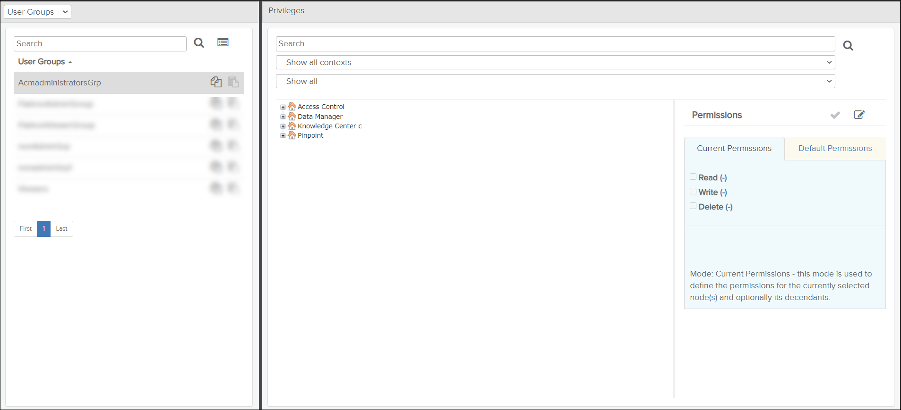
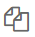
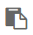

If your user role has
Read permission for the Privileges
privilege, you can access the Privileges page by clicking the  Privileges icon on the header bar. The
Privileges page is a tool for assigning system privileges to user
groups, user roles, and organizations. A system privilege is a permission to access and run
predefined parts/program resources or data in a system or product.
Privileges icon on the header bar. The
Privileges page is a tool for assigning system privileges to user
groups, user roles, and organizations. A system privilege is a permission to access and run
predefined parts/program resources or data in a system or product.
- User Groups / User Roles /
Organizations (left side): Lists
all items of the selected category available to your organization and allows you to
search the selected list.Note: You can toggle between different item category lists from the drop-down menu at the top of the left-side pane. The Organizations option may only show if you belong to your organization’s "[NCAGE] Organization Administrators" user role. For details on how system and organization administrators can add other users to this role, refer to Edit User Group / User Role.
- Privileges (right side): Shows the products and their function privileges/data access permissions that can be granted to the selected items.

Privileges Page Example
The table below describes the components in the User Groups / User Roles / Organizations pane. For more information about using these components, refer to Manage Function Privileges and Data Access Permissions.
| Component | Description |
|---|---|
| Search field and |
Type text in this field and click the The search is not case sensitive and has support for "*" and "%" wild cards. A hidden "%" wild card is automatically applied in front of and behind the entered text. This means that a search for "test" returns "tests" and "tester" in addition to the actual search word. You can also use the "*" or "%" wild card to replace characters in the search word. A search for "analy*er" will return both "analyser" and "analyzer". The number of items found in a search is displayed in footer. |
| Select multiple icon |
User Groups / Organizations only: Click this icon to select multiple items with a Selections box. |
 Copy |
Click this icon for the selected User Group / User Role /Organization to copy the permissions for the item. |
 Paste |
Click this icon for the selected User Group / User Role / Organization to paste
the permissions copied from another item. A confirmation message appears. Click
the OK button to paste the copied permissions.
Note: This
will overwrite all permissions previously set for the selected
item.
|
| User Groups / User Roles / Organizations list |
This list shows all user groups, user roles, or organizations registered for your organization. When you select an item in the list, the Privileges pane is refreshed with the products and permissions for the selected item. If the list contains more entries than can fit into one page, the list is paged and you can navigate between the pages using the navigation buttons below the list. |
The table below briefly describes the components in the Privileges pane. For more information about using these components, refer to Manage Function Privileges and Data Access Permissions.
| Component | Description |
|---|---|
| Search field and |
Type text in this field and click the The search is not case sensitive and has support for "*" and "%" wild cards. A hidden "%" wild card is automatically applied in front of and behind the entered text. This means that a search for "test" returns "tests" and "tester" in addition to the actual search word. You can also use the "*" or "%" wild card to replace characters in the search word. A search for "organi*ation" will return both "organisation" and "organization". |
| Show contexts drop-down menu |
Drop-down menu that contains all the products that are under privilege control. The product you select and its hierarchy of nodes appears below the drop-down menu. |
| Show drop-down menu |
Drop-down menu that allows you to choose the permission you want to filter on to display only items with the selected permission. |
| product hierarchy tree | Each product has a home icon that represents the top level. To expand collapse nodes of the tree, click the expand and collapse icons. |
| Permissions sub-section | The permissions that can be given to items for a selected node in a product’s hierarchy. |
| Current Permissions tab | User Groups / Organizations only: Select this tab to define permissions for the currently selected node(s). |
| Default Permissions tab | User Groups / Organizations only:
Select this tab to define the default permissions assigned to any future
descendants. These permissions will be used when a new node is created and can be
individually overwritten if needed. Note: This mode does not set permissions for the
currently selected node(s).
|
 Edit icon
Edit icon |
Press this icon to edit the Privileges pane. The Apply to descendants checkbox also appears in the Privileges pane. |
| Apply to descendants checkbox | Activate this checkbox to apply the same set of permissions
to all child nodes that are visible, ignoring the children that are not available to
your organization. Note: The checkbox appears only after you click the
Edit icon.When you select the Apply to
descendants checkbox, there are three possible states for each of
the permissions:
Note: You can toggle between activated and deactivated state by clicking the
permission boxes.
|
 Save icon
Save icon |
Click this icon to save changes in the Privileges pane. |
 Cancel icon
Cancel icon |
Click this icon to cancel editing in the Privileges pane. |